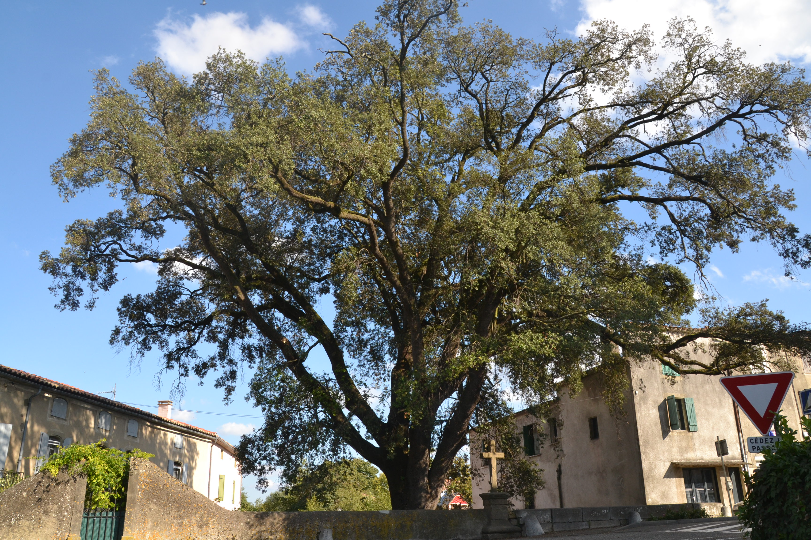
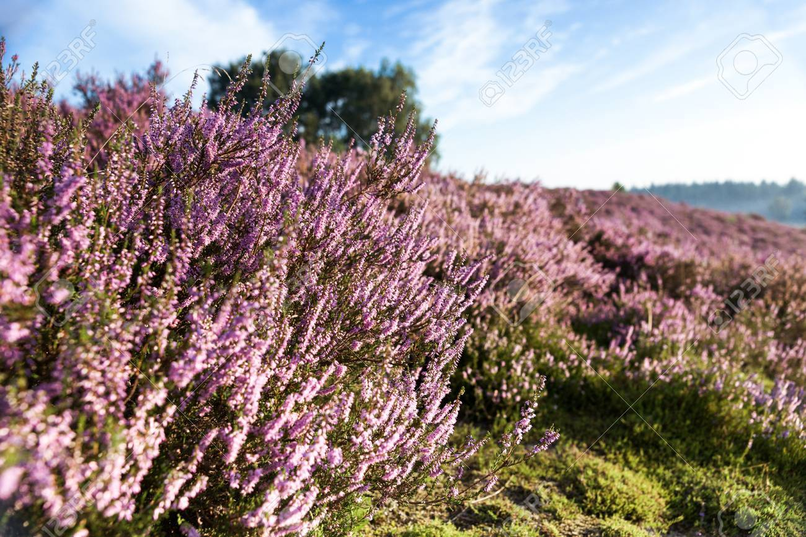
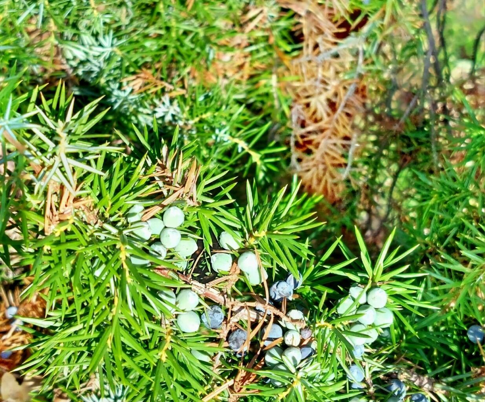

La flore de l'Espagne varie selon la zone géographique, car dans chaque région il existe des variations de relief, de température et de précipitations. Ce pays possède la plus grande diversité d’espèces végétales d’Europe. Dans le nord de l'Espagne, les prairies abondent et la végétation à feuilles caduques prédomine. En revanche, dans la zone sud, on trouve de nombreuses plantes et arbustes à feuilles persistantes et aromatiques. Parmi les espèces d'arbres les plus représentatives d'Espagne, on distingue : le chêne vert (qui est considéré comme l'arbre national), le chêne-liège méditerranéen, diverses espèces de pins, le chêne méditerranéen, l'eucalyptus, le genévrier, le hêtre, le sapin, parmi tant d'autres. D'autres espèces végétales que l'on peut trouver sur le territoire espagnol sont : l'œillet (qui est la plante nationale de l'Espagne), les campanules espagnoles, les grenades, la bruyère, le genêt et les herbes aromatiques comme le thym.
|  | |
 |  |
|---|---|---|---|
| Chene vert | L'oeillet | Bruyère | Genévrieru |